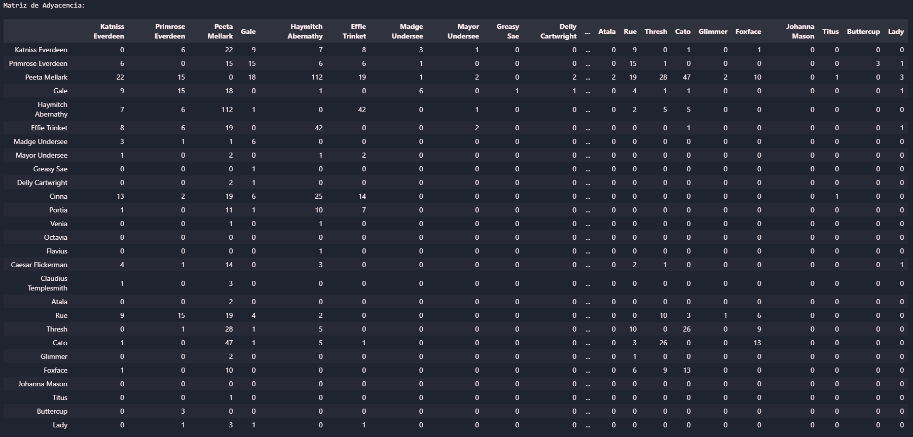
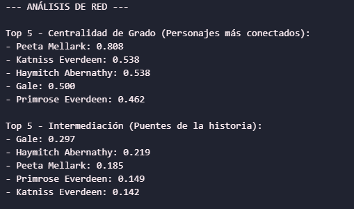
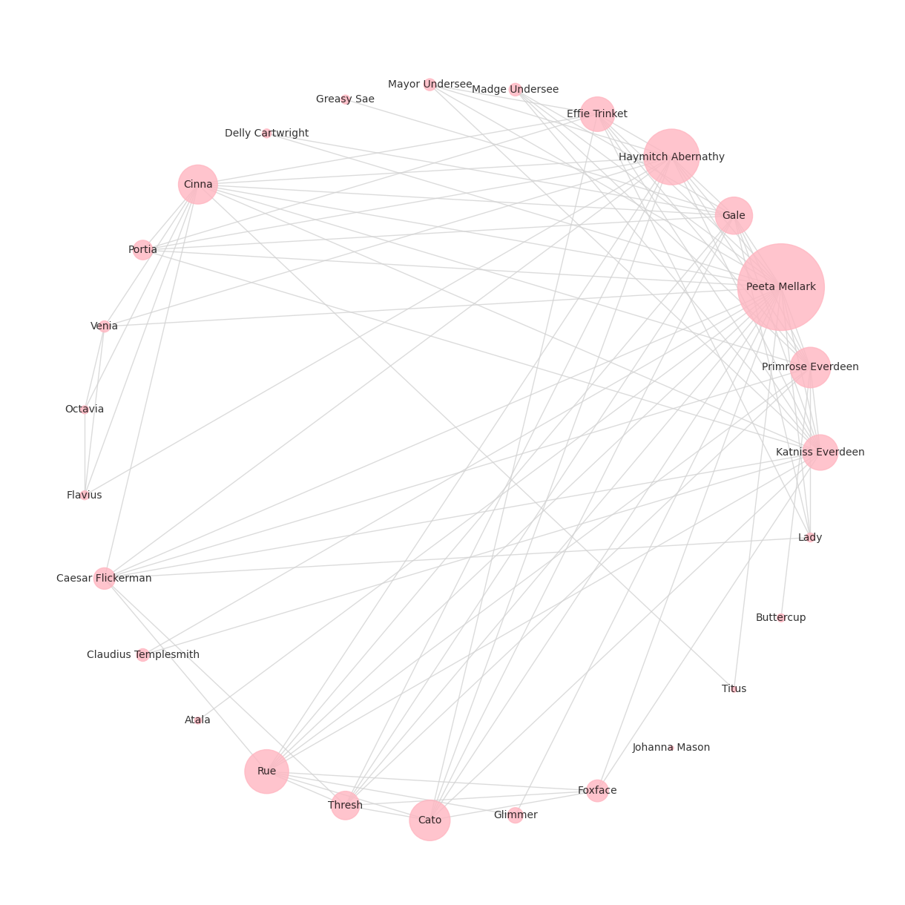
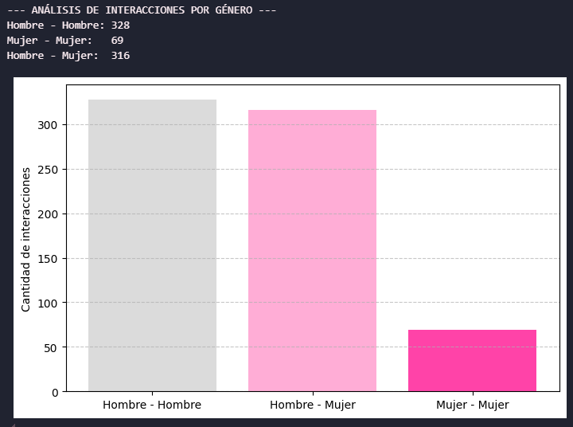
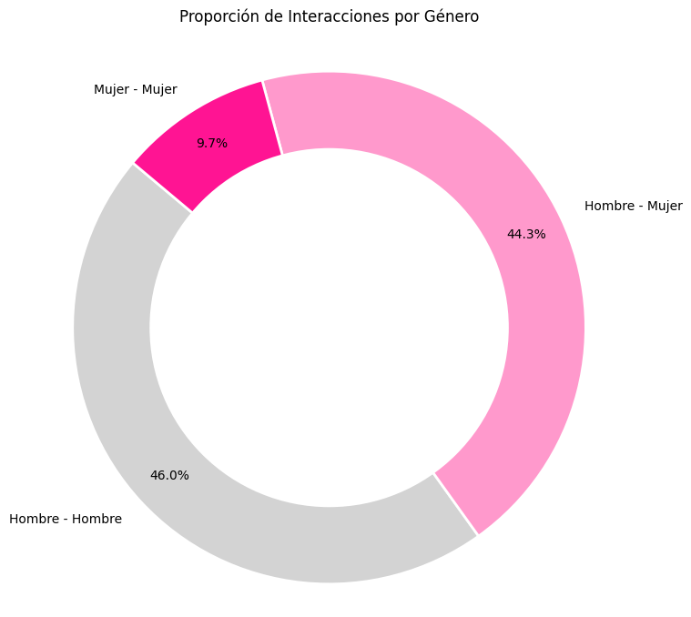

Para dar continuidad a la exploración de redes complejas en la literatura, en este análisis se implementó exactamente el mismo código y metodología computacional desarrollados en la entrada anterior para La Comunidad del Anillo. Utilizando el modelo base de coocurrencia —que conecta a dos personajes mediante una arista si aparecen en el texto original separados por quince palabras o menos—, procesamos ahora la novela Los Juegos del Hambre de Suzanne Collins. El propósito de este ejercicio es demostrar la versatilidad del algoritmo, aplicándolo a una obra con un estilo narrativo radicalmente distinto para contrastar sus métricas topológicas y observar cómo el modelo matemático es capaz de capturar las dinámicas particulares de esta nueva historia.


El análisis topológico en este caso presenta un fenómeno particular derivado directamente de su perspectiva narrativa. Aunque Katniss Everdeen es la protagonista indiscutible, la métrica de Centralidad de Grado posiciona a Peeta Mellark en el primer lugar con un valor de 0.808, relegando a Katniss a un segundo puesto (0.538). Este resultado es una consecuencia algorítmica de la narración en primera persona; al relatar la historia desde su propia voz ("yo"), su nombre explícito aparece con menor frecuencia en el texto en comparación con los personajes que ella misma observa y describe. El grafo refleja cómo la atención y el relato se centran en Peeta, convirtiendo su nodo en el más masivo al ser mencionado de manera constante junto a otros tributos y mentores dentro de la ventana de quince palabras.

Al evaluar la Intermediación, el modelo revela la verdadera arquitectura de los vínculos en la novela. Gale (0.297) y Haymitch Abernathy (0.219) se perfilan como los puentes fundamentales de la historia, superando estructuralmente a los propios tributos. Matemáticamente, esto indica que son nodos críticos para conectar diferentes clústeres de la red; Gale actúa como el ancla que une el mundo empobrecido del Distrito 12 con la psique de la narradora, mientras que Haymitch funciona como el enlace vital entre los competidores, el Capitolio y los patrocinadores. Estos personajes tienen una alta intermediación porque controlan el flujo de información y conectan subgrupos narrativos que de otra forma permanecerían aislados en la gráfica.


La cuantificación de interacciones por género arroja resultados que deben interpretarse con cautela debido a un sesgo algorítmico inherente a la perspectiva de la novela. Aunque la gráfica muestra que la categoría "Hombre - Hombre" domina la red con más de 300 interacciones, mientras que los cruces "Mujer - Mujer" apenas superan los 50 registros, esto es una ilusión topológica provocada por la narradora. Al relatar la historia desde su propia óptica, Katniss interactúa constantemente a través de pronombres ("yo", "me") en lugar de su nombre propio. En consecuencia, el modelo pierde un volumen masivo de conexiones directas entre ella y otros personajes femeninos fundamentales, como Primrose Everdeen o Rue, registrándolas solo cuando su nombre explícito aparece en diálogos cercanos. Este resultado nos lleva a una conclusión muy interesante, pues la gráfica no solo mapea la estructura de la trama, sino que demuestra matemáticamente cómo la voz literaria de la protagonista crea "puntos ciegos" en las herramientas de análisis de datos.